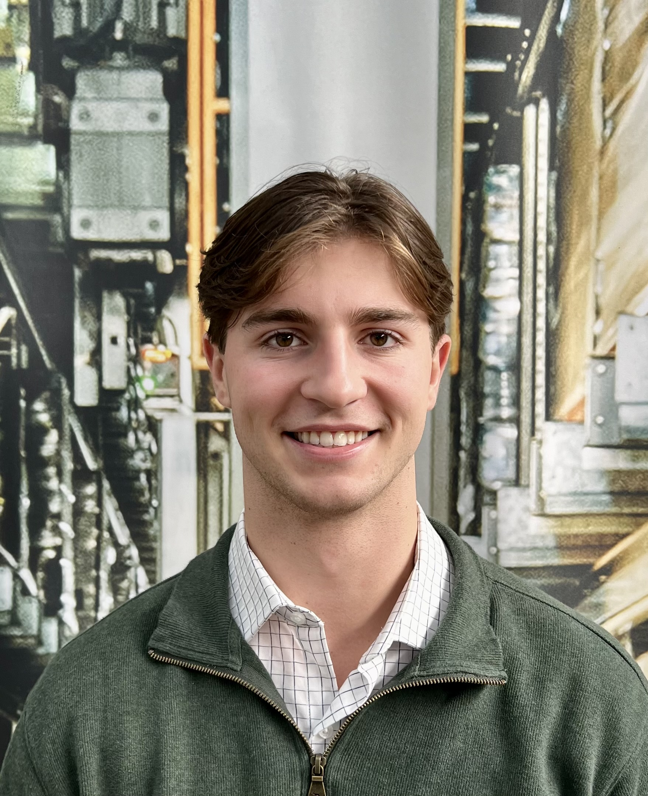

MackenzieThompson.
Graduate Mechanical Engineer from UTS focused on systems design, thermal modelling, project management, and sustainability analysis. Seeking roles in engineering consulting and infrastructure project delivery.

Bachelor of Engineering — Mechanical
WAM · First Class Honours
High Distinction Grades · 53.6% of core subjects
Motivated · Empathetic · Collaborative.
My engineering education at UTS has centred on learning to analyse a range of complex systems, from thermal and mechanical design to financial risk and sustainability policy. Across numerous projects, I’ve moved between analytical rigour and stakeholder communication, building the cross-disciplinary skillset that engineering demands.
Experience

Analytical control of latent thermal energy storage using phase change materials.
The project focused on creating a fast and reliable simulation tool to reduce the amount of physical testing required during development. Two MATLAB models were validated against experimental data, predicting system performance with 94% outlet temperature accuracy.
Project Index
Consulting & Strategy
Infrastructure Investment & Risk Evaluation
Financial modelling, risk analysis, and biomass sustainability investigation.
Design & Stakeholder
Rocket Stand · Solar BBQ · Klip-Board
Client-focused design, iterative prototyping, and stakeholder communication.